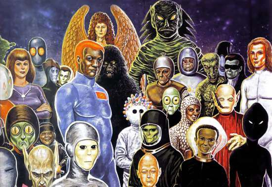
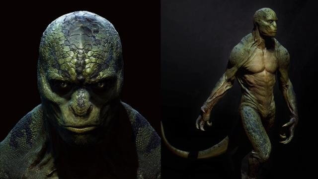
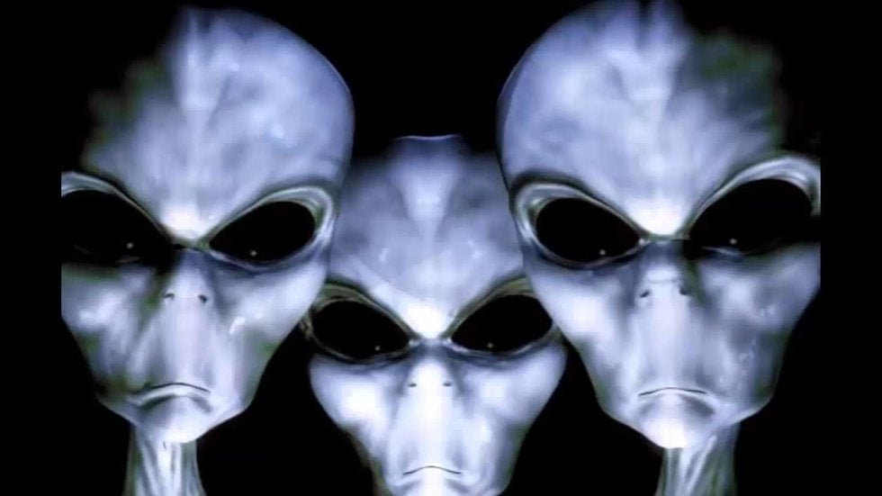
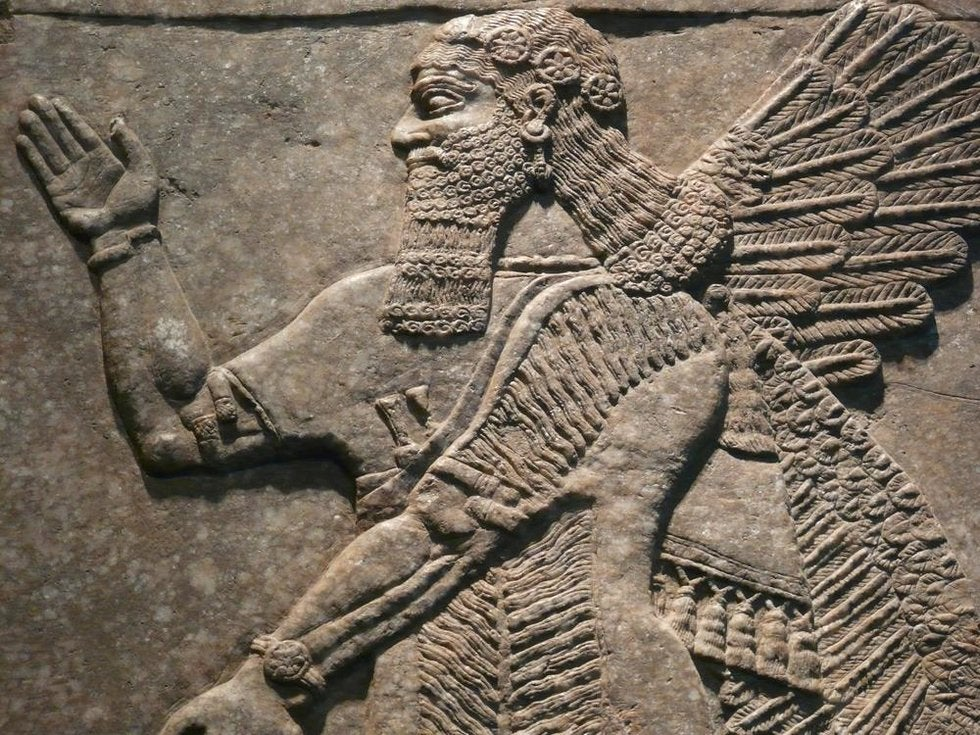
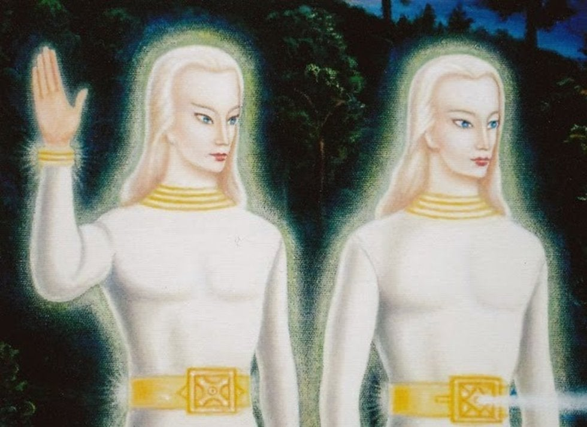

El conocimiento de estas presuntas civilizaciones estelares, se deriva a partir de varios relatos de personas que afirman ser contactadas con seres externos a
nuestro planeta y también por las múltiples leyendas de distintas civilizaciones antiguas a lo largo de todo el globo terráqueo que se ven reflejadas en varias
historias ficticias del cine y la televisión. A continuación los alienígenas que más contacto ha tenido con la humanidad.

Reptilianos (Ciakar o Chitauri)
Los reptilianos o reptiloides, serían una raza proveniente de los Draconianos, unos humanoides de más de seis a
ocho pies de altura con características de reptiles,
que han jugado un importante papel en teorías de conspiración modernas y en estudios de ufologí
Su origen aparente es que evolucionaron de una raza inteligente en la Tierra en forma paralela a los seres humanos,
pero con distintas teorías como que son de origen extraterrestre o intraterrestre, entes sobrenaturales o descendientes
de una antiquísima civilización que vivió miles de años antes que los humanos.
Supuestamente son grandes guerreros, con un importante, competitivo y jerárquico sistema político-militar. Esto los
llevó a librar guerras contra los humanos. Tienen gran poder psíquico y se alimentan de energías negativas como el odio y el miedo.
Se dice que controlan la Tierra desde las sombras disfrazándose de seres humanos entre la élite gobernante.
La clásica miniserie de extraterrestres 'V', usó de inspiración a los reptiloides para sus criaturas alienígenas en
la historia, como seres que se disfrazaban de humanos para conquistar la Tierra.
Existen también leyendas de que Quetzalcoatl, la 'serpiente emplumada' de los aztecas era en realidad un reptiloide,
proclamado dios entre los humanos por ser justamente un ser superior alienígena.

Grises
La representación alienígena más popular es la de los grises, que se dividen en los pequeños y altos. Los pequeños son seres
delgados, de cabeza grande y alargada, con ojos negros y de unos cinco pies de altura. Supuestamente proceden de la
constelación de Orión y que son quienes ejecutan la mayoría de las abducciones de personas cometidas en la Tierra.
Se dice que los grises en realidad sirven a los Reptilianos y que durante los años 50 negociaron en secreto con el
gobierno estadounidense para intercambiar tecnología, a cambio de poder experimentar con seres humanos, con tal de
investigar cómo sobrevivimos para que ellos mismos puedan evitar su extinción como raza.
Los grises pequeños son supervisados aparentemente dentro de su propia civilización por los grises altos, que miden de siete
a ocho pies y quienes serían quienes realizan las "misiones diplomáticas" con otras razas cósmicas, y que ellos fueron quienes
negociaron en secreto con el gobierno.
Hay militares estadounidenses que han jurado ser testigo de negociaciones con estos aliens, quienes al parecer tendrían
poderes mentales muy fuertes, para influenciar en la toma de decisiones de gobierno, en infiltrar altos niveles políticos
y de modificar genéticamente a algunos humanos.

Nibiruanos o Anunnaki
Los nibiruanos, o Annunaki, son una raza de humanoides gigantes que vinieron a la Tierra a "sembrarla" con humanos y que
regresan periódicamente para ver cómo hemos utilizado los recursos. Annunaki era el nombre que los sumerios le dieron a sus deidades,
como en estas inscripciones, que venían del planeta Nibiru y cuya denominación significa "los que bajaron del cielo a la
Tierra".
Unos arqueólogos tradujeron tablillas sumerias donde supuestamente se dice que los numerios mezclaron su propio gen con los homínidos,
produciendo a la raza humana que colocaron en la Tierra hace al menos 200 mil años. Los primeros homo sapiens los
consideraron "dioses" por ser seres superiores.
Al parecer, los Annunaki regresarán pronto a ver cómo la humanidad ha evolucionado y ver de qué manera seguirán impactando a
la Tierra, algo que estaría preocupando a agencias de seguridad, militar y políticas a nivel mundial, creadas para manejar
todo tipo de asuntos extraterrestres.

Lyrianos
Provienen de Lyra y Vega,de allí pertenecen dos tipos de seres inteligentes,los humanoides de piel oscura y de tipo no caucásico,estan
diseminando la verdadera historia de la raza de piel oscura/azul en la Galaxia, y asistiendo a la humanidad en la
comprensión de su potencial y motivación,son seres positivos y benevolentes que estan recuperando la verdadera historia
de la humanidad y el legado de los Veganos y comprendiendo la historia Galáxtica.
Veganos
Proviene de la constelación de Lyra,es una raza raza Progresiva a de servicio de otros,hay varias razas interviniendo para que el Sistema
de Control se desbarate y para que la Raza Humana evolucione,todas ellas estan trabajando en conjunto para ayudar al ser
humano a liberarse del Sistema de Control y para guiarlo a encontrar su camino hacia la ascención de su conciencia,se dice
que la raza humana tiene sus orígenes en un grupo de seres espirituales de la 11° densidad conocidos como “Paa Tal” y la
primera manifestación en forma física de ellos ocurrió en Lyra,estas razas derivaron de Lyra despues de las guerras que
los obligaron a emigrar a otros sistemas:,estan diseminando la verdadera historia de la raza Nórdica en la Galaxia y
asistiendo en la comprensión de las motivaciones humanas y su potencial y recuperando la verdadera historia de la humanidad
y el legado de los Lyrianos.

Arcturianos
Provienen de La Estrella Arcturus 300.000 veces mas grande que nuestro sol en la constelación de Bootes,a 36 mil años luz de la
Tierra donde esta Gigante Estrella da vida a un conjunto de planetas habitados por ellos,tienen una actitud hacia los
humanos:Benevolente,existen diversas declaraciones sobre el aspecto de esta raza,algunos dicen que los Arcturianos son del
tamaño de los niños, de unos 3 a 4 pies de altura con piel verde o azul pálida, grandes ojos oscuros en forma de almendra, y
con sólo tres dedos por mano,también podrían tener largos cráneos y altamente desarrolladas capacidades telepáticas y
telekinéticas,al parecer requieren dormir en lo mínimo y su tiempo de vida iría a unos cuantos cientos de años,se cree que
los arcturianos son una de las civilizaciones más avanzadas, benevolentes y evolucionadas de la Galaxia,valoran la
espiritualidad y la familia, y se dice que logran trascender la forma física,están gobernados por un consejo de viejos
sabios, y tienen una sociedad altamente jerárquica,muchos humanos sostienen comunicarse telepáticamente con los Arcturianos y
haber recibido información de que esta civilización es una de las que está ayudando a la evolución humana,las naves
arcturianas se cree que miden hasta varias millas de largo,algunos creen que la energía requerida para propulsar estas naves
masivas proviene de un tipo de cristal y que han desarrollado tecnología para teletrasportarse,integrando los valores
espirituales con la avanzada tecnología, proveyendo de consejos estratégicos para transformar los sistemas planetarios,
creadores tambien de los Circulos,los Arcturianos después de las Guerras de Lyra encontraron su morada en el sistema de
Arcturus,ya que inclusive se les califica como una raza muy reservada y generalmente no intervienen en los eventos de otras
razas y solo permanecen como espectadores a menos de que haya implicaciones muy críticas entre conflictos Galaxticos por parte de
razas Hostiles y Agresivas,se conoce de ellos que son una raza benevolente en la mayor parte de sus facciones ya que se dice
que existe un grupo subversivo de ellos que optan por no tomar acción en absolutamente nada,sin embargo, la facción
benevolente como mayoría es muy conocida por ser seres de gran capacidad curativa.